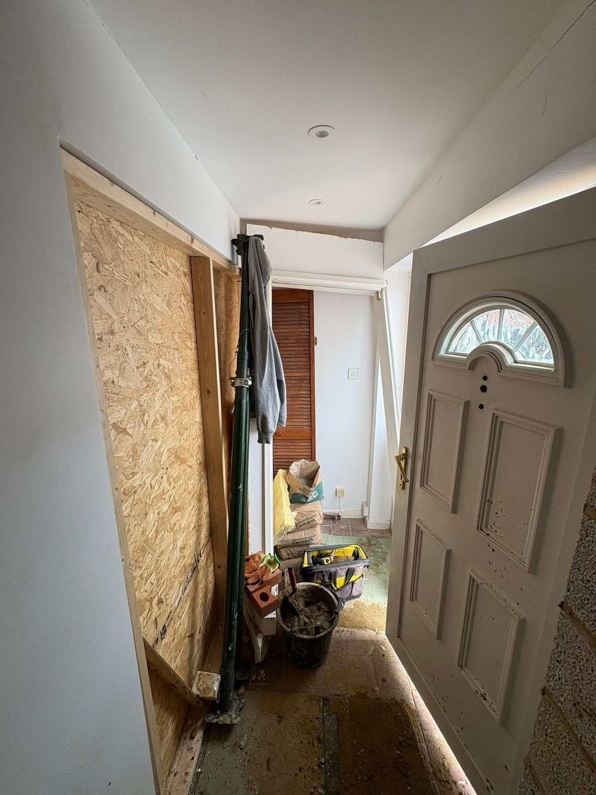
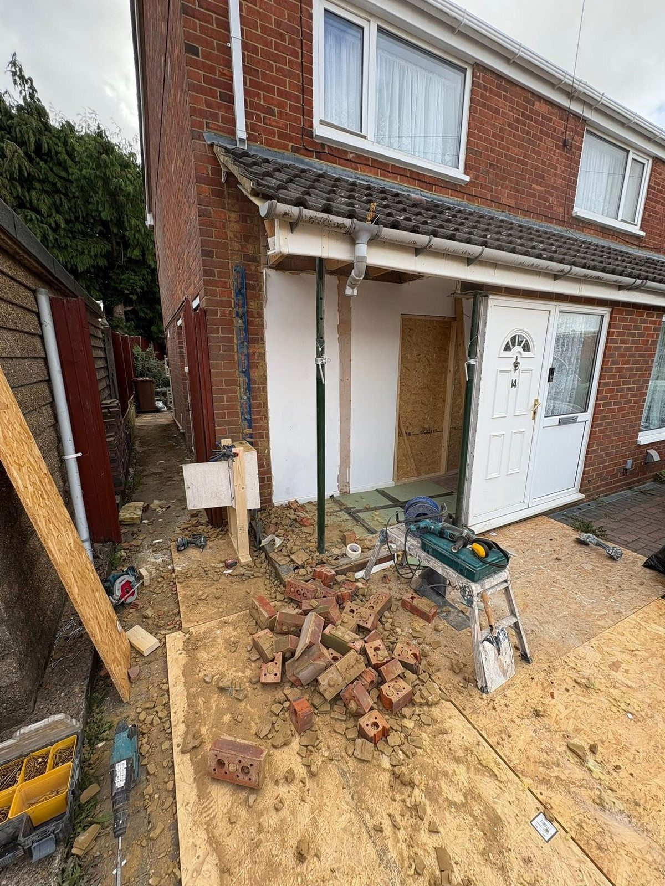
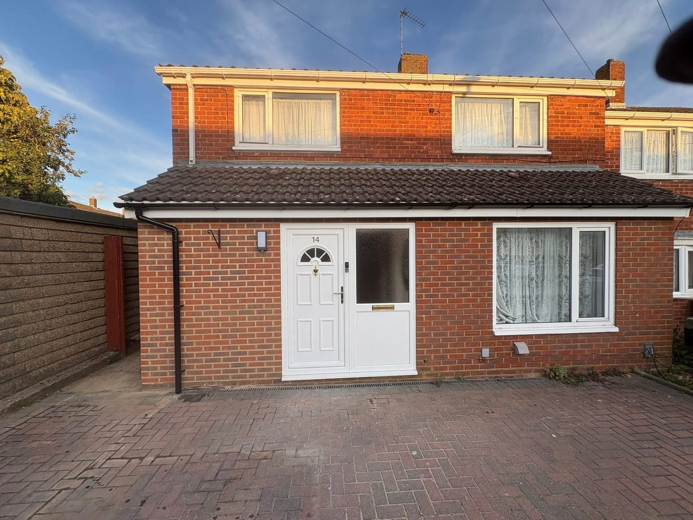
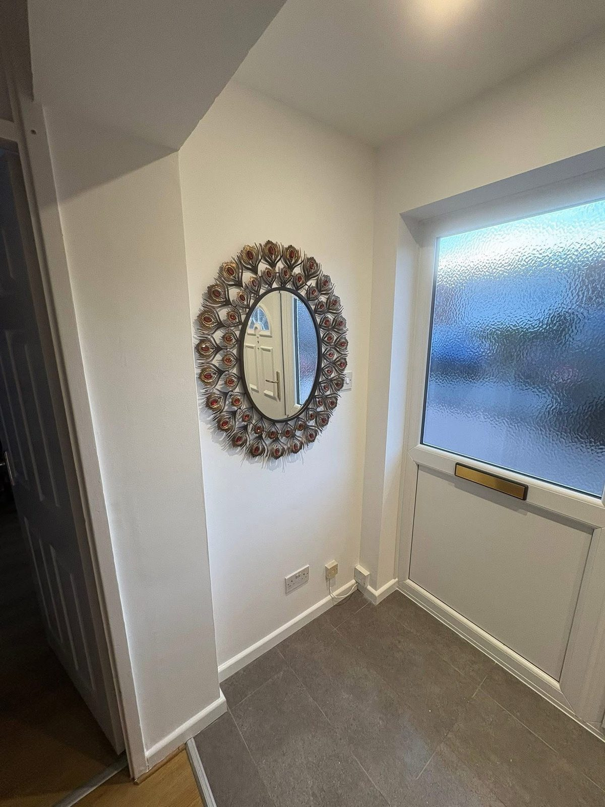

Insurance Reinstatement
A full front porch rebuild following impact damage. From demolition through to a faithful reinstatement that matches the original brickwork, roofline and detailing.
The brief
Significant impact damage. Full rebuild.
Substantial impact damage to the front porch of a property in North London required a complete rebuild from the foundations up. The insurer instructed ARIA to demolish the damaged structure, support the roof during works, and reconstruct the porch to match the existing property externally and internally.
Our team handled the full scope: structural support during demolition, fresh brickwork and blockwork to match the existing house, roof reinstatement, new internal finishes including flooring, walls and joinery, and a complete make-good throughout the affected areas of the hallway.
The work




The result
Rebuilt to look like nothing ever happened.
A complete reinstatement that integrates seamlessly with the original property. The new porch matches the existing brickwork, roofline and detailing, and the hallway inside is fully reinstated with new flooring, decoration and finishes.
Delivered through our JSPER-managed process: scoped, scheduled, evidenced and signed off with a full audit trail for the insurer.
Impact or structural claims?
From emergency make-safe through to final sign-off, ARIA delivers structural insurance reinstatement work to the standard your supply chain expects.
Get in touch